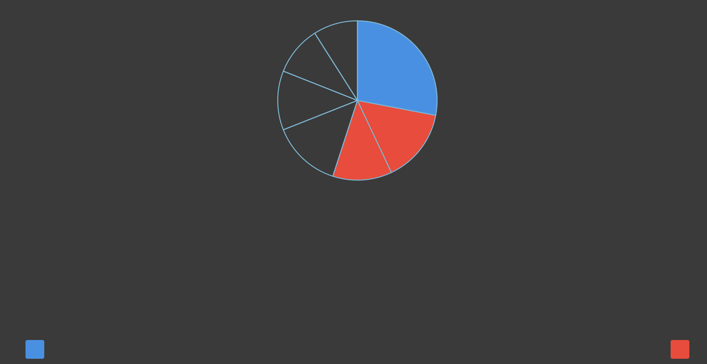
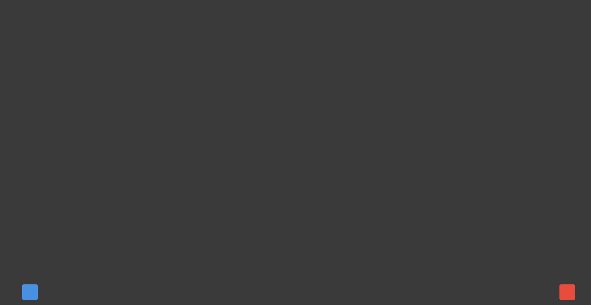

<!DOCTYPE html>
<html lang="ja">
<head>
    <meta charset="UTF-8">
    <title>グラフ知覚実験</title>
    <script src="https://unpkg.com/jspsych@7.3.4"></script>
    <script src="https://unpkg.com/@jspsych/plugin-html-keyboard-response@1.1.3"></script>
    <script src="https://unpkg.com/@jspsych/plugin-instructions@1.1.4"></script>
    <link href="https://unpkg.com/jspsych@7.3.4/css/jspsych.css" rel="stylesheet">
    
    <style>
        body {
            background-color: #3a3a3a; /* 濃い灰色 */
        }
        .jspsych-display-element {
            background-color: #3a3a3a;
        }
        /* 刺激コンテナ：濃い灰色背景 */
        .chart-container {
            background-color: #3a3a3a;
            padding: 40px;
            display: inline-block;
        }
        /* 画面下の色パッチ凡例（キー対応） */
        .key-guide {
            position: fixed;
            bottom: 20px;
            left: 0;
            width: 100%;
            display: flex;
            justify-content: space-between;
            padding: 0 60px;
            box-sizing: border-box;
            pointer-events: none;
        }
        .key-patch {
            width: 40px;
            height: 40px;
            border-radius: 4px;
        }
        .instructions {
            max-width: 800px;
            margin: 0 auto;
            text-align: left;
            background-color: #ffffff;
            padding: 30px;
            border-radius: 8px;
            color: #333;
        }
        #jspsych-content {
            color: #cccccc;
            background-color: #3a3a3a;
            min-height: 100vh;
        }
        h2 { color: #2c3e50; }
        .result-summary {
            background-color: #ffffff;
            color: #333333;
            max-width: 600px;
            margin: 50px auto;
            padding: 30px;
            border-radius: 8px;
            box-shadow: 0 2px 8px rgba(0,0,0,0.3);
        }
    </style>
</head>
<body>
    <script>
        // ==============================
        // 色定義（論文準拠）
        // 背景：濃い灰色 #3a3a3a
        // 刺激輪郭：薄い青色
        // 比較対象：青・赤で塗りつぶし
        // 非比較：薄い青色（輪郭のみ or 薄塗り）
        // ==============================
        const BLUE  = '#4A90E2';   // 比較対象（青）
        const RED   = '#E74C3C';   // 比較対象（赤）
        const NEUTRAL = 'none';    // 非比較要素（塗りつぶしなし・輪郭線のみ）
        const OUTLINE = '#7EB8D4'; // グラフ輪郭色（薄い青）
        const LABEL_COLOR = '#ffffff'; // ラベル文字色

        // ==============================
        // 極座標変換
        // ==============================
        function polarToCartesian(cx, cy, r, angleDeg) {
            const rad = (angleDeg - 90) * Math.PI / 180;
            return { x: cx + r * Math.cos(rad), y: cy + r * Math.sin(rad) };
        }

        // ==============================
        // 円グラフ（7要素対応）
        // ==============================
        function createPieChart(values, colors, size = 360) {
            const total = values.reduce((a, b) => a + b, 0);
            const cx = size / 2, cy = size / 2;
            const r = size / 2 - 10;
            let currentAngle = 0;
            let svg = `<svg width="${size}" height="${size}" viewBox="0 0 ${size} ${size}">`;
            values.forEach((value, i) => {
                const sweepAngle = (value / total) * 360;
                const path = makePieSlice(cx, cy, r, currentAngle, sweepAngle);
                svg += `<path d="${path}" fill="${colors[i]}" stroke="${OUTLINE}" stroke-width="2"/>`;
                currentAngle += sweepAngle;
            });
            svg += '</svg>';
            return svg;
        }

        function makePieSlice(cx, cy, r, startAngle, sweepAngle) {
            const start = polarToCartesian(cx, cy, r, startAngle);
            const end   = polarToCartesian(cx, cy, r, startAngle + sweepAngle);
            const largeArc = sweepAngle > 180 ? 1 : 0;
            return `M ${cx} ${cy} L ${start.x} ${start.y} A ${r} ${r} 0 ${largeArc} 1 ${end.x} ${end.y} Z`;
        }

        // ==============================
        // ドーナツチャート（7要素対応）
        // ==============================
        function createDonutChart(values, colors, size = 360) {
            const total = values.reduce((a, b) => a + b, 0);
            const cx = size / 2, cy = size / 2;
            const outerR = size / 2 - 10;
            const innerR = outerR * 0.6;
            let currentAngle = 0;
            let svg = `<svg width="${size}" height="${size}" viewBox="0 0 ${size} ${size}">`;
            values.forEach((value, i) => {
                const sweepAngle = (value / total) * 360;
                const path = makeDonutSlice(cx, cy, outerR, innerR, currentAngle, sweepAngle);
                svg += `<path d="${path}" fill="${colors[i]}" stroke="${OUTLINE}" stroke-width="2"/>`;
                currentAngle += sweepAngle;
            });
            svg += '</svg>';
            return svg;
        }

        function makeDonutSlice(cx, cy, outerR, innerR, startAngle, sweepAngle) {
            const oS = polarToCartesian(cx, cy, outerR, startAngle);
            const oE = polarToCartesian(cx, cy, outerR, startAngle + sweepAngle);
            const iS = polarToCartesian(cx, cy, innerR, startAngle);
            const iE = polarToCartesian(cx, cy, innerR, startAngle + sweepAngle);
            const la = sweepAngle > 180 ? 1 : 0;
            return `M ${oS.x} ${oS.y} A ${outerR} ${outerR} 0 ${la} 1 ${oE.x} ${oE.y}
                    L ${iE.x} ${iE.y} A ${innerR} ${innerR} 0 ${la} 0 ${iS.x} ${iS.y} Z`;
        }

        // ==============================
        // 棒グラフ（7要素対応）
        // ==============================
        function createBarChart(values, colors, width = 480, height = 320) {
            const n = values.length;
            const padL = 30, padR = 20, padT = 20, padB = 40;
            const plotW = width - padL - padR;
            const plotH = height - padT - padB;
            const barW  = Math.floor(plotW / n * 0.6);
            const gap   = Math.floor(plotW / n);
            const maxVal = Math.max(...values);

            let svg = `<svg width="${width}" height="${height}" viewBox="0 0 ${width} ${height}">`;
            // 軸線（薄い青色）
            svg += `<line x1="${padL}" y1="${padT}" x2="${padL}" y2="${padT + plotH}" stroke="${OUTLINE}" stroke-width="1.5"/>`;
            svg += `<line x1="${padL}" y1="${padT + plotH}" x2="${padL + plotW}" y2="${padT + plotH}" stroke="${OUTLINE}" stroke-width="1.5"/>`;

            values.forEach((val, i) => {
                const bH = (val / maxVal) * plotH;
                const x  = padL + i * gap + (gap - barW) / 2;
                const y  = padT + plotH - bH;
                svg += `<rect x="${x}" y="${y}" width="${barW}" height="${bH}"
                        fill="${colors[i]}" stroke="${OUTLINE}" stroke-width="1.5"/>`;
            });
            svg += '</svg>';
            return svg;
        }

        // ==============================
        // shuffle
        // ==============================
        function shuffle(arr) {
            const a = [...arr];
            for (let i = a.length - 1; i > 0; i--) {
                const j = Math.floor(Math.random() * (i + 1));
                [a[i], a[j]] = [a[j], a[i]];
            }
            return a;
        }

        // ==============================
        // 試行データ定義（7要素、3課題タイプ）
        //
        // task: 'AvsB'      … A と B を比較
        //       'AvsBpC'    … A と B+C を比較
        //       'ApBvsCpD'  … A+B と C+D を比較
        //
        // colors配列: 各要素のindex順 (A,B,C,D,E,F,G)
        //   比較対象要素のみ BLUE or RED を割り当て
        //   それ以外は NEUTRAL
        //
        // answer: 'z'(青が大) or '/'(赤が大)
        // ==============================
        // ==============================
        // answer自動計算
        // colors配列でBLUEの要素合計とREDの要素合計を比較
        // BLUE合計 > RED合計 → 'z'、RED合計 > BLUE合計 → '/'
        // ==============================
        function calcAnswer(values, colors) {
            let blueSum = 0, redSum = 0;
            values.forEach((v, i) => {
                if (colors[i] === BLUE) blueSum += v;
                if (colors[i] === RED)  redSum  += v;
            });
            return blueSum > redSum ? 'z' : '/';
        }

        const LABELS = ['A','B','C','D','E','F','G'];

        const baseDataSets = [
            // ---- AvsB（10セット）----
            { values:[30,27,15,10,6,7,5],   colors:[BLUE,RED,NEUTRAL,NEUTRAL,NEUTRAL,NEUTRAL,NEUTRAL], task:'AvsB' },
            { values:[20,16,17,24,10,8,5],  colors:[RED,BLUE,NEUTRAL,NEUTRAL,NEUTRAL,NEUTRAL,NEUTRAL], task:'AvsB' },
            { values:[32,27,14,12,5,6,4],   colors:[BLUE,RED,NEUTRAL,NEUTRAL,NEUTRAL,NEUTRAL,NEUTRAL], task:'AvsB' },
            { values:[18,24,20,18,10,6,4],  colors:[RED,BLUE,NEUTRAL,NEUTRAL,NEUTRAL,NEUTRAL,NEUTRAL], task:'AvsB' },
            { values:[6,15,30,12,24,8,5],   colors:[NEUTRAL,NEUTRAL,BLUE,NEUTRAL,RED,NEUTRAL,NEUTRAL], task:'AvsB' },
            { values:[10,14,16,23,12,17,8], colors:[NEUTRAL,NEUTRAL,NEUTRAL,RED,NEUTRAL,BLUE,NEUTRAL], task:'AvsB' },
            { values:[15,26,9,35,8,5,2],    colors:[NEUTRAL,BLUE,NEUTRAL,RED,NEUTRAL,NEUTRAL,NEUTRAL], task:'AvsB' },
            { values:[15,18,15,8,10,8,26],  colors:[NEUTRAL,NEUTRAL,RED,NEUTRAL,NEUTRAL,NEUTRAL,BLUE], task:'AvsB' },
            { values:[17,18,14,12,10,6,23], colors:[BLUE,NEUTRAL,NEUTRAL,NEUTRAL,NEUTRAL,NEUTRAL,RED], task:'AvsB' },
            { values:[7,23,8,7,35,13,7],    colors:[NEUTRAL,BLUE,NEUTRAL,NEUTRAL,RED,NEUTRAL,NEUTRAL], task:'AvsB' },

            // ---- AvsBpC（10セット）----
            { values:[28,15,10,16,12,10,9], colors:[BLUE,RED,NEUTRAL,NEUTRAL,RED,NEUTRAL,NEUTRAL],     task:'AvsBpC' },
            { values:[27,16,15,14,15,8,5],  colors:[RED,BLUE,NEUTRAL,NEUTRAL,BLUE,NEUTRAL,NEUTRAL],    task:'AvsBpC' },
            { values:[8,12,9,34,13,16,8],   colors:[NEUTRAL,RED,NEUTRAL,BLUE,NEUTRAL,RED,NEUTRAL],     task:'AvsBpC' },
            { values:[16,15,25,14,16,10,4], colors:[BLUE,NEUTRAL,RED,NEUTRAL,BLUE,NEUTRAL,NEUTRAL],    task:'AvsBpC' },
            { values:[7,12,10,14,12,10,35], colors:[NEUTRAL,NEUTRAL,NEUTRAL,RED,NEUTRAL,RED,BLUE],     task:'AvsBpC' },
            { values:[12,29,10,8,20,13,8],  colors:[NEUTRAL,RED,NEUTRAL,NEUTRAL,BLUE,NEUTRAL,BLUE],    task:'AvsBpC' },
            { values:[16,14,25,7,9,21,8],   colors:[RED,NEUTRAL,BLUE,NEUTRAL,RED,NEUTRAL,NEUTRAL],     task:'AvsBpC' },
            { values:[12,10,16,10,8,26,18], colors:[NEUTRAL,NEUTRAL,BLUE,NEUTRAL,NEUTRAL,RED,BLUE],    task:'AvsBpC' },
            { values:[26,15,8,16,8,15,12],  colors:[BLUE,NEUTRAL,RED,NEUTRAL,NEUTRAL,RED,NEUTRAL],     task:'AvsBpC' },
            { values:[12,18,10,8,36,6,10],  colors:[NEUTRAL,BLUE,NEUTRAL,NEUTRAL,RED,NEUTRAL,BLUE],    task:'AvsBpC' },

            // ---- ApBvsCpD（10セット）----
            { values:[18,22,20,18,12,6,4],  colors:[BLUE,NEUTRAL,RED,NEUTRAL,RED,BLUE,NEUTRAL],        task:'ApBvsCpD' },
            { values:[16,18,22,22,12,6,4],  colors:[BLUE,NEUTRAL,RED,BLUE,NEUTRAL,RED,NEUTRAL],        task:'ApBvsCpD' },
            { values:[14,20,18,10,18,16,4], colors:[RED,BLUE,NEUTRAL,NEUTRAL,RED,BLUE,NEUTRAL],        task:'ApBvsCpD' },
            { values:[14,16,14,10,22,20,4], colors:[NEUTRAL,BLUE,NEUTRAL,RED,NEUTRAL,RED,BLUE],        task:'ApBvsCpD' },
            { values:[20,12,18,15,10,8,17], colors:[BLUE,NEUTRAL,RED,BLUE,RED,NEUTRAL,NEUTRAL],        task:'ApBvsCpD' },
            { values:[10,20,12,14,16,18,10], colors:[NEUTRAL,RED,NEUTRAL,RED,BLUE,NEUTRAL,BLUE],        task:'ApBvsCpD' },
            { values:[10,14,20,10,18,20,8], colors:[NEUTRAL,RED,BLUE,NEUTRAL,RED,BLUE,NEUTRAL],        task:'ApBvsCpD' },
            { values:[10,22,10,14,8,18,18],  colors:[BLUE,RED,NEUTRAL,RED,NEUTRAL,BLUE,NEUTRAL],        task:'ApBvsCpD' },
            { values:[12,12,18,20,8,15,15], colors:[BLUE,NEUTRAL,BLUE,RED,NEUTRAL,RED,NEUTRAL],        task:'ApBvsCpD' },
            { values:[18,22,16,8,16,8,12],  colors:[NEUTRAL,BLUE,NEUTRAL,BLUE,RED,NEUTRAL,RED],        task:'ApBvsCpD' },
        ].map(d => ({ ...d, answer: calcAnswer(d.values, d.colors) }));

        // 3種類のグラフ × 30データ = 90試行
        const trialsData = [];
        baseDataSets.forEach(base => {
            ['pie','donut','bar'].forEach(display => {
                trialsData.push({
                    display,
                    task: base.task,
                    values: base.values,
                    colors: base.colors,
                    answer: base.answer
                });
            });
        });

        // ==============================
        // 試行生成
        // グラフ表示（1秒・入力不可）→ 暗灰色で応答受付 → 黒画面（500ms）の3trial構成
        // ==============================
        function createTrial(data) {
            // --- trial 1: グラフ表示（1秒・入力不可） ---
            const stimulusTrial = {
                type: jsPsychHtmlKeyboardResponse,
                stimulus: function() {
                    let chart;
                    if (data.display === 'pie')
                        chart = createPieChart(data.values, data.colors);
                    else if (data.display === 'donut')
                        chart = createDonutChart(data.values, data.colors);
                    else
                        chart = createBarChart(data.values, data.colors);
                    return `
                        <div class="chart-container">${chart}</div>
                        <div class="key-guide">
                            <div class="key-patch" style="background:${BLUE};"></div>
                            <div class="key-patch" style="background:${RED};"></div>
                        </div>`;
                },
                choices: 'NO_KEYS',
                trial_duration: 1000
            };

            // --- trial 2: 暗灰色背景のみ（入力受付・入力があれば即遷移） ---
            const responseTrial = {
                type: jsPsychHtmlKeyboardResponse,
                stimulus: `
                    <div class="key-guide">
                        <div class="key-patch" style="background:${BLUE};"></div>
                        <div class="key-patch" style="background:${RED};"></div>
                    </div>`,
                choices: ['z', '/'],
                data: {
                    task: 'comparison',
                    display_type: data.display,
                    task_type: data.task,
                    correct_answer: data.answer
                },
                on_finish: (d) => {
                    d.correct  = d.response === d.correct_answer;
                    d.too_slow = (d.rt > 1500);
                }
            };

            // --- trial 3: 黒画面（500ms・入力不可） ---
            const maskTrial = {
                type: jsPsychHtmlKeyboardResponse,
                stimulus: '<div style="position:fixed;top:0;left:0;width:100%;height:100%;background:#000;"></div>',
                choices: 'NO_KEYS',
                trial_duration: 700
            };

            return [stimulusTrial, responseTrial, maskTrial];
        }

        // ==============================
        // jsPsych 初期化
        // ==============================
        const jsPsych = initJsPsych({
            on_finish: () => {
                const trials  = jsPsych.data.get().filter({task: 'comparison'});
                const acc     = Math.round(trials.filter({correct: true}).count() / trials.count() * 100);
                const pieAcc  = Math.round(trials.filter({display_type: 'pie',   correct: true}).count() / trials.filter({display_type: 'pie'}).count()   * 100);
                const donutAcc= Math.round(trials.filter({display_type: 'donut', correct: true}).count() / trials.filter({display_type: 'donut'}).count() * 100);
                const barAcc  = Math.round(trials.filter({display_type: 'bar',   correct: true}).count() / trials.filter({display_type: 'bar'}).count()   * 100);

                // 課題別正答率
                const avsBacc  = Math.round(trials.filter({task_type:'AvsB',      correct:true}).count() / trials.filter({task_type:'AvsB'}).count()      * 100);
                const avsBpCacc= Math.round(trials.filter({task_type:'AvsBpC',    correct:true}).count() / trials.filter({task_type:'AvsBpC'}).count()    * 100);
                const apBvsCpD = Math.round(trials.filter({task_type:'ApBvsCpD',  correct:true}).count() / trials.filter({task_type:'ApBvsCpD'}).count()  * 100);

                const completionCode = Math.random().toString(36).substring(2,10).toUpperCase();
                const participantID  = 'P' + Date.now();

                sendDataToGoogleForm(completionCode, participantID);

                document.querySelector('#jspsych-content').innerHTML = `
                    <div class="result-summary">
                        <h2>実験終了</h2>
                        <p>ご協力ありがとうございました。</p>
                        <div id="saving-status" style="margin:20px 0;padding:15px;background-color:#fff3cd;border-radius:8px;">
                            <p style="margin:0;">💾 データを保存中...</p>
                        </div>
                        <hr style="margin:30px 0;border:none;border-top:1px solid #ddd;">
                        <h3 style="color:#666;font-size:18px;">参考：あなたの成績</h3>
                        <p>全体正答率: ${acc}%</p>
                        <p style="font-size:14px;color:#888;">
                            円グラフ: ${pieAcc}% / ドーナツ: ${donutAcc}% / 棒グラフ: ${barAcc}%
                        </p>
                        <p style="font-size:14px;color:#888;">
                            A vs B: ${avsBacc}% / A vs B+C: ${avsBpCacc}% / A+B vs C+D: ${apBvsCpD}%
                        </p>
                    </div>`;
            }
        });

        // ==============================
        // Google Forms 送信
        // ==============================
        function sendDataToGoogleForm(completionCode, participantID) {
            const FORM_URL = 'https://docs.google.com/forms/d/e/1FAIpQLScfY99Vc75k6KLdZ_KfpRX0BaCdnx8Ay1o5egep57iY_PVRSw/formResponse';
            const ENTRY_PARTICIPANT_ID  = 'entry.551669018';
            const ENTRY_COMPLETION_CODE = 'entry.1527195614';
            const ENTRY_CSV_DATA        = 'entry.2090131968';

            const trials = jsPsych.data.get().filter({task: 'comparison'});
            let compactCSV = 'rt,response,display_type,task_type,correct,too_slow\n';
            trials.values().forEach(trial => {
                compactCSV += `${trial.rt},${trial.response},${trial.display_type},${trial.task_type},${trial.correct},${trial.too_slow}\n`;
            });

            const formData = new FormData();
            formData.append(ENTRY_COMPLETION_CODE, completionCode);
            formData.append(ENTRY_CSV_DATA,        compactCSV);
            formData.append(ENTRY_PARTICIPANT_ID,  participantID);

            fetch(FORM_URL, { method:'POST', body:formData, mode:'no-cors' })
            .then(() => {
                const s = document.getElementById('saving-status');
                if (s) { s.style.backgroundColor='#d4edda'; s.innerHTML='<p style="margin:0;color:#155724;">✅ データが正常に保存されました</p>'; }
            })
            .catch(() => {
                const s = document.getElementById('saving-status');
                if (s) { s.style.backgroundColor='#f8d7da'; s.innerHTML='<p style="margin:0;color:#721c24;">⚠️ データ保存に失敗しました。</p>'; }
            });
        }

        // ==============================
        // サンプルチャート生成（パーセント表示なし）
        // ==============================
        function createSamplePieChart(values, colors, size = 280) {
            const total = values.reduce((a, b) => a + b, 0);
            const cx = size / 2, cy = size / 2;
            const r = size / 2 - 10;
            let currentAngle = 0;
            let svg = `<svg width="${size}" height="${size}" viewBox="0 0 ${size} ${size}">`;
            values.forEach((value, i) => {
                const sweepAngle = (value / total) * 360;
                const path = makePieSlice(cx, cy, r, currentAngle, sweepAngle);
                svg += `<path d="${path}" fill="${colors[i]}" stroke="${OUTLINE}" stroke-width="2"/>`;
                currentAngle += sweepAngle;
            });
            svg += '</svg>';
            return svg;
        }

        function createSampleDonutChart(values, colors, size = 280) {
            const total = values.reduce((a, b) => a + b, 0);
            const cx = size / 2, cy = size / 2;
            const outerR = size / 2 - 10;
            const innerR = outerR * 0.55;
            let currentAngle = 0;
            let svg = `<svg width="${size}" height="${size}" viewBox="0 0 ${size} ${size}">`;
            values.forEach((value, i) => {
                const sweepAngle = (value / total) * 360;
                const path = makeDonutSlice(cx, cy, outerR, innerR, currentAngle, sweepAngle);
                svg += `<path d="${path}" fill="${colors[i]}" stroke="${OUTLINE}" stroke-width="2"/>`;
                currentAngle += sweepAngle;
            });
            svg += '</svg>';
            return svg;
        }

        function createSampleBarChart(values, colors, width = 320, height = 220) {
            const n = values.length;
            const padL = 30, padR = 20, padT = 30, padB = 20;
            const plotW = width - padL - padR;
            const plotH = height - padT - padB;
            const barW  = Math.floor(plotW / n * 0.6);
            const gap   = Math.floor(plotW / n);
            const maxVal = Math.max(...values);
            let svg = `<svg width="${width}" height="${height}" viewBox="0 0 ${width} ${height}">`;
            svg += `<line x1="${padL}" y1="${padT}" x2="${padL}" y2="${padT+plotH}" stroke="${OUTLINE}" stroke-width="1.5"/>`;
            svg += `<line x1="${padL}" y1="${padT+plotH}" x2="${padL+plotW}" y2="${padT+plotH}" stroke="${OUTLINE}" stroke-width="1.5"/>`;
            values.forEach((val, i) => {
                const bH = (val / maxVal) * plotH;
                const x  = padL + i * gap + (gap - barW) / 2;
                const y  = padT + plotH - bH;
                svg += `<rect x="${x}" y="${y}" width="${barW}" height="${bH}"
                        fill="${colors[i]}" stroke="${OUTLINE}" stroke-width="1.5"/>`;
            });
            svg += '</svg>';
            return svg;
        }

        // サンプル用データ（青1・赤1・NEUTRAL5）→ AvsB相当
        const sampleValues  = [30, 20, 15, 10, 10, 8, 7];
        const sampleColors  = [BLUE, RED, NEUTRAL, NEUTRAL, NEUTRAL, NEUTRAL, NEUTRAL];

        // サンプル用データ2（青2・赤2・NEUTRAL3）→ ApBvsCpD相当
        const sampleValues2 = [22, 18, 20, 16, 12, 8, 4];
        const sampleColors2 = [BLUE, BLUE, RED, RED, NEUTRAL, NEUTRAL, NEUTRAL];

        // ==============================
        // 練習用試行生成（フィードバックあり）
        // ==============================
        function createPracticeTrial(data) {
            const stimulusTrial = {
                type: jsPsychHtmlKeyboardResponse,
                stimulus: function() {
                    let chart;
                    if (data.display === 'pie')
                        chart = createPieChart(data.values, data.colors);
                    else if (data.display === 'donut')
                        chart = createDonutChart(data.values, data.colors);
                    else
                        chart = createBarChart(data.values, data.colors);
                    return `
                        <div class="chart-container">${chart}</div>
                        <div class="key-guide">
                            <div class="key-patch" style="background:${BLUE};"></div>
                            <div class="key-patch" style="background:${RED};"></div>
                        </div>`;
                },
                choices: 'NO_KEYS',
                trial_duration: 1000
            };

            const responseTrial = {
                type: jsPsychHtmlKeyboardResponse,
                stimulus: `
                    <div class="key-guide">
                        <div class="key-patch" style="background:${BLUE};"></div>
                        <div class="key-patch" style="background:${RED};"></div>
                    </div>`,
                choices: ['z', '/'],
                data: {
                    task: 'practice',
                    correct_answer: data.answer
                },
                on_finish: (d) => {
                    d.correct  = d.response === d.correct_answer;
                    d.too_slow = (d.rt > 1500);
                }
            };

            // --- trial 3: 黒画面（500ms・入力不可） ---
            const maskTrial = {
                type: jsPsychHtmlKeyboardResponse,
                stimulus: '<div style="position:fixed;top:0;left:0;width:100%;height:100%;background:#000;"></div>',
                choices: 'NO_KEYS',
                trial_duration: 500
            };

            return [stimulusTrial, responseTrial, maskTrial];
        }

        // 練習用データ（4試行・3グラフタイプ・複数課題）
        const practiceData = [
            { display:'pie',   values:[30,20,15,10,10,8,7], colors:[BLUE,RED,NEUTRAL,NEUTRAL,NEUTRAL,NEUTRAL,NEUTRAL] },
            { display:'bar',   values:[18,14,25,16,12,8,7], colors:[NEUTRAL,NEUTRAL,BLUE,NEUTRAL,RED,NEUTRAL,NEUTRAL] },
            { display:'donut', values:[20,16,15,14,12,13,10], colors:[BLUE,RED,RED,NEUTRAL,NEUTRAL,NEUTRAL,NEUTRAL]   },
            { display:'pie',   values:[16,18,20,14,12,10,10], colors:[BLUE,BLUE,NEUTRAL,RED,RED,NEUTRAL,NEUTRAL]      }
        ].map(d => ({ ...d, answer: calcAnswer(d.values, d.colors) }));

        // ==============================
        // タイムライン構築
        // ==============================
        const timeline = [];

        // 教示
        timeline.push({
            type: jsPsychInstructions,
            pages: [
                `<div class="instructions">
                    <h2>グラフ知覚実験</h2>
                    <p>円グラフ，棒グラフ，ドーナツグラフのいずれかが表示されます</p>
                    <p><span style="color:${BLUE};font-weight:bold">青</span> で塗られた部分の合計と
                    <span style="color:${RED};font-weight:bold">赤</span> で塗られた部分の合計を比べて、
                    どちらが大きいかを判断してください。</p>
                    <p>青・赤はそれぞれ <b>1〜2個</b> の要素が対象です。</p>
                    <hr style="margin:20px 0;border:none;border-top:1px solid #ddd;">
                    <p>グラフの各要素はパーセンテージを表しており、すべての要素の合計は常に <b>100%</b> です。</p>
                    <div style="display:flex;gap:20px;justify-content:center;margin-top:20px;background:#3a3a3a;padding:16px;border-radius:8px;flex-wrap:wrap;">
                        <div style="text-align:center;">
                            <p style="color:#ccc;margin-bottom:6px;font-size:14px;">円グラフ（青1・赤1）</p>
                            ${createSamplePieChart(sampleValues, sampleColors, 200)}
                        </div>
                        <div style="text-align:center;">
                            <p style="color:#ccc;margin-bottom:6px;font-size:14px;">棒グラフ（青2・赤2）</p>
                            ${createSampleBarChart(sampleValues2, sampleColors2, 220, 200)}
                        </div>
                        <div style="text-align:center;">
                            <p style="color:#ccc;margin-bottom:6px;font-size:14px;">ドーナツ（青1・赤2）</p>
                            ${createSampleDonutChart([28,15,12,14,12,10,9], [BLUE,RED,RED,NEUTRAL,NEUTRAL,NEUTRAL,NEUTRAL], 200)}
                        </div>
                    </div>
                </div>`,
                `<div class="instructions">
                    <h2>応答方法</h2>
                    <p>グラフは <b>1秒</b> 表示されます。<b>グラフが消えたら すぐに</b> キーを押してください。</p>
                    <div style="display:flex;gap:30px;justify-content:center;align-items:flex-start;margin-top:20px;">
                        <div style="text-align:center;">
                            <p style="font-weight:bold;margin-bottom:8px;">① グラフ画面（1秒）</p>
                            
                        </div>
                        <div style="text-align:center;font-size:30px;padding-top:80px;">→</div>
                        <div style="text-align:center;">
                            <p style="font-weight:bold;margin-bottom:8px;">② 応答画面</p>
                            
                        </div>
                    </div>
                    <p style="margin-top:20px;">①のようなグラフ画面が <b>1秒</b> 表示されたあと、②の画面に切り替わります。<br>
                    切り替わったら <b>すぐに</b> キーを押して応答してください。</p>
                    <br>
                    <p><span style="color:${BLUE};font-weight:bold">青</span> が大きい → <b>Z キー（左）</b></p>
                    <p><span style="color:${RED};font-weight:bold">赤</span> が大きい → <b>/ キー（右）</b></p>
                    <p style="font-size:13px;color:#666;">画面の左下に青パッチ、右下に赤パッチが常に表示されます。</p>
                </div>`,
                `<div class="instructions">
                    <h2 >練習問題</h2>
                    <p>これから練習問題を <b>4問</b> 行います。<br><br>
                    準備ができたら「次へ」を押してください。</p>
                </div>`
            ],
            show_clickable_nav: true,
            button_label_next: '次へ',
            button_label_previous: '戻る'
        });

        // 練習4試行（フィードバックあり）
        practiceData.forEach(t => timeline.push(...createPracticeTrial(t)));

        // 練習終了
        timeline.push({
            type: jsPsychHtmlKeyboardResponse,
            stimulus: `<div style="color:#fffff;font-size:20px;padding:40px;max-width:600px;margin:0 auto;text-align:center;">
                <h2 style="color:#ffffff;">練習終了</h2>
                <p>お疲れさまでした。これから本番を開始します。</p>
                <p style="font-size:16px;margin-top:30px;">何かキーを押してください。</p>
            </div>`
        });

        // 本試行（シャッフル）
        shuffle(trialsData).forEach((t, i) => {
            if (i > 0 && i % 30 === 0) {
                timeline.push({
                    type: jsPsychHtmlKeyboardResponse,
                    stimulus: `<div style="color:#fffff;font-size:22px;padding:40px;">
                        <h2 style="color:#ffffff;">休憩</h2><p>進捗: ${i} / ${trialsData.length}</p>
                        <p>何かキーを押して続行</p></div>`
                });
            }
            timeline.push(...createTrial(t));
        });

        jsPsych.run(timeline);
    </script>
</body>
</html>
